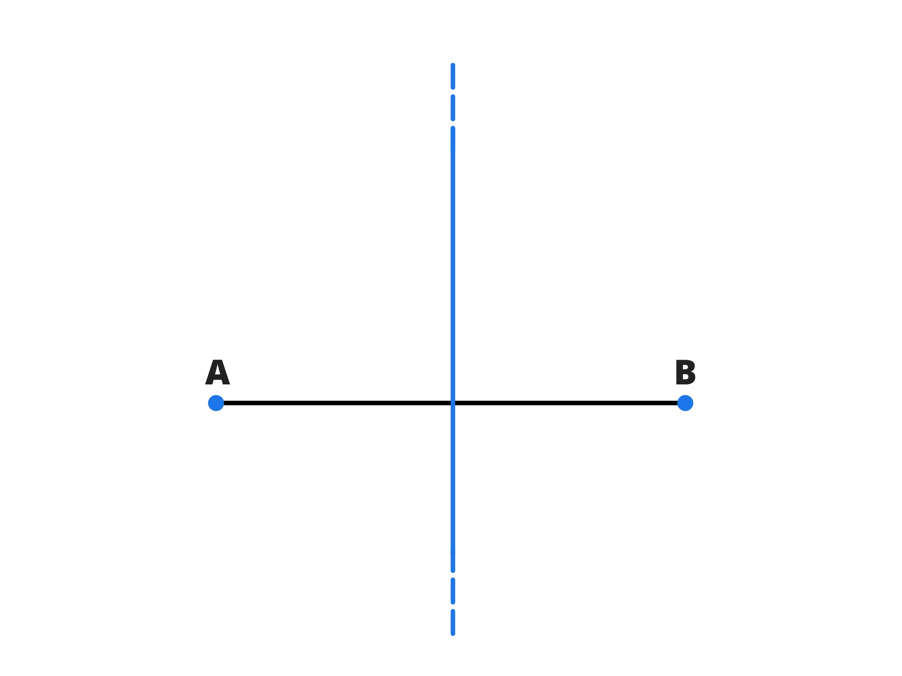

Luogo geometrico
Di seguito analizzeremo il luogo geometrico dei punti.
Cos’è un luogo geometrico?
Si chiama luogo geometrico l’insieme di tutti e soli i punti del piano o dello spazio che soddisfano una determinata proprietà.
In geometria analitica, la proprietà soddisfatta dai punti del luogo \(P(x,y\)) è un’equazione in \(x\) e in \(y\).
Ora vedremo nel dettaglio degli esempi dei luoghi geometrici più semplici:
- La circonferenza è il luogo geometrico dei punti del piano equidistanti da un punto fisso dello centro, la distanza tra i punti e il centro si chiama raggio.

- L’asse del segmento è il luogo geometrico dei punti equidistanti dagli estremi di un segmento. 
- La parabola è il luogo geometrico dei punti equidistanti da un punto detto fuoco e una retta detta direttrice.